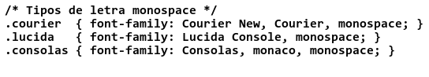

10. Monospace typefaces¶
In this exercise we study monospace fonts and their use to represent code.
References.
Exercise¶
File css-monospace.html
1 2 3 4 5 6 7 8 9 10 11 12 13 14 15 16 17 18 19 20 21 22 23 24 25 26 27 28 29 30 31 32 33 34 35 36 | <!doctype html>
<html>
<head>
<title> Tipos de letra monospace </title>
<link rel="stylesheet" type="text/css"
href="css-monospace.css" >
</head>
<body>
<h1> Tipos de letra monospace </h1>
<p class="courier">
En las fuentes monospace o monoespaciadas todas las letras
y números tienen la misma anchura, independientemente de la
letra o número que sea.
Es decir, la anchura de la letra "i" será igual a la
anchura de la letra "M".</p>
<p class="lucida">
Estos tipos de letra se utilizan para representar código
de ordenador, para imitar cómo escribe una máquina antigua
de escribir o un terminal de ordenador. También es útil para
representar números en varias filas de manera que las
columnas coincidan. </p>
<p class="consolas">
En la hoja de estilo CSS, además del tipo de letra se
especifica siempre la familia monospace. De esta forma
si el tipo de letra no está instalado, el navegador
seleccionará otro semejante. </p>
</body>
</html>
|
File css-monospace.css
